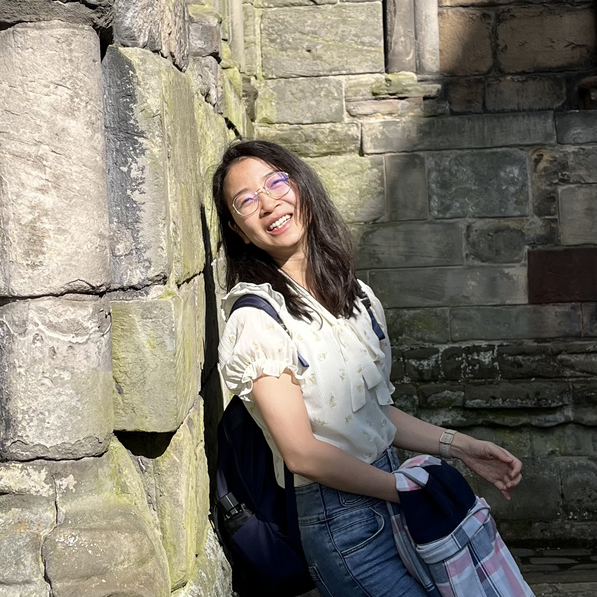

Reconstructing cell fate dynamics
Developing AI methods to infer cellular trajectories and state transitions from single-cell, multi-omic and spatial data across development, homeostasis, regeneration and disease.
Computational Biology · University of Cambridge
We develop interpretable, AI-driven dynamical models to understand how cells make decisions, change identity and evolve during development and disease.

About the lab
Lian Lab is based at the University of Cambridge and works at the interface of artificial intelligence, dynamical systems and computational biology. We aim to understand the principles that govern cell fate decisions: how cellular identities emerge, how they are maintained, and how cells change state in response to developmental cues, tissue damage and disease.
We develop computational and mathematical approaches that move beyond static descriptions of cell populations towards predictive, mechanistic models of cellular dynamics. By integrating machine learning with single-cell and spatial omics, we seek to uncover the regulatory programmes and tissue interactions that shape cell behaviour over time.
Our research spans stem cell biology, tissue homeostasis and regeneration, cellular plasticity and early cancer evolution.
Research directions
We combine AI, mathematical modelling and multi-omics to reconstruct, understand and predict cell fate decisions.
Developing AI methods to infer cellular trajectories and state transitions from single-cell, multi-omic and spatial data across development, homeostasis, regeneration and disease.
Using dynamical systems, neural differential equations and topological methods to uncover the regulatory mechanisms and collective behaviours that shape cellular identity.
Integrating molecular and spatial information to predict cell-state transitions, identify key regulators and explore how cellular dynamics can be altered in disease.
Opportunities
We are looking for enthusiastic researchers who are excited about using AI and dynamical modelling to understand fundamental questions in cell biology.
We have funding available to support one postdoctoral researcher to join Lian Lab at the University of Cambridge. The position is currently being prepared and will be formally advertised shortly.
We welcome informal enquiries from interested candidates in advance of the formal advertisement. The successful candidate will develop and apply AI-driven dynamical models to understand cell fate decisions, cellular plasticity and tissue dynamics, integrating computational modelling with single-cell and spatial omics data.
If you have experience in machine learning, mathematical modelling, computational biology, bioinformatics or a related quantitative discipline, and are excited by fundamental biological questions, please feel free to get in touch.
This project is offered through the CRUK Cambridge Centre Studentships programme at the University of Cambridge and will be co-supervised with Professor Ben Simons. Focusing on intestinal cancer, the project will use single-cell data to reconstruct early cancer evolution and develop interpretable AI and dynamical modelling approaches to understand how cellular states change and how interactions within the tissue microenvironment shape cancer initiation and progression.
The project is suited to applicants interested in the interface of AI, quantitative modelling and cancer biology. Candidates from computational, mathematical, physical, engineering, bioinformatics or relevant biological backgrounds are welcome, provided they have a strong interest in computational approaches to biological questions.
The studentship is part of a competitive doctoral training programme. Please consult the programme website for the full details of funding, eligibility, required documents and the application process.
Programme details and application instructions →We welcome enquiries from prospective postdoctoral researchers interested in jointly developing fellowship applications with Lian Lab. Please see examples of relevant funding schemes below; eligibility and mobility requirements vary.
We also welcome enquiries about national and international fellowship schemes in applicants' home countries. Please contact us to discuss a potential project and joint application.
We welcome people with different academic backgrounds who share a strong interest in quantitative and computational approaches to biology. Relevant experience may include:
Programming and quantitative skills are important for our research. We value curiosity, creativity and a genuine enthusiasm for developing computational approaches to address biological questions.
Get in touch
If you are interested in a funded postdoctoral position, a PhD project or developing a fellowship application with us, please get in touch. A short introduction to your background, research interests and the opportunity you are considering would be very helpful.
ql333@cam.ac.uk